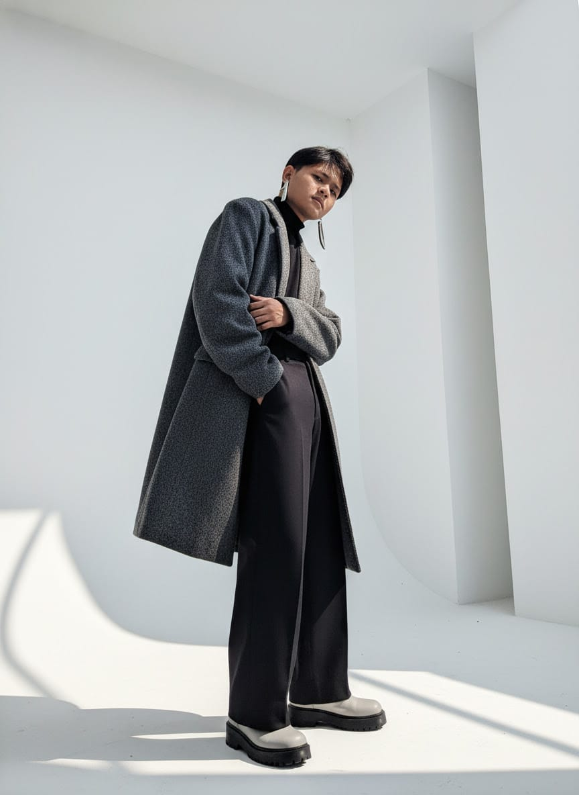
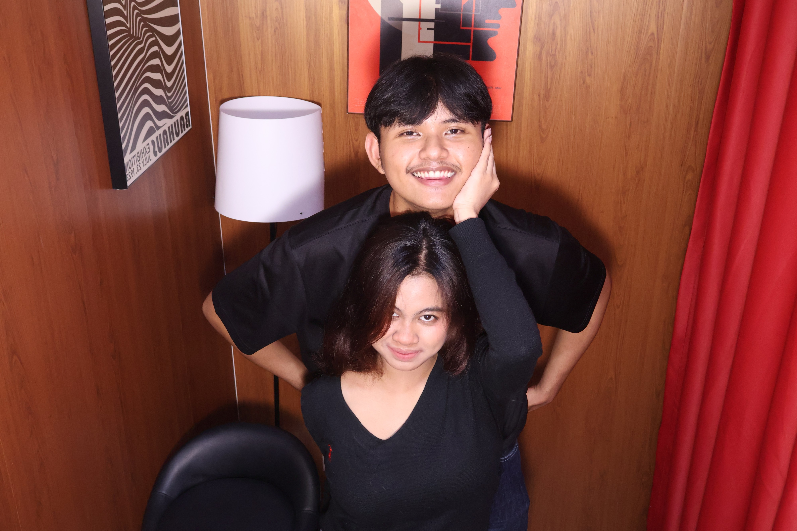
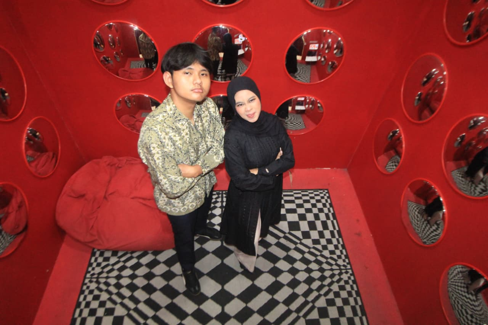
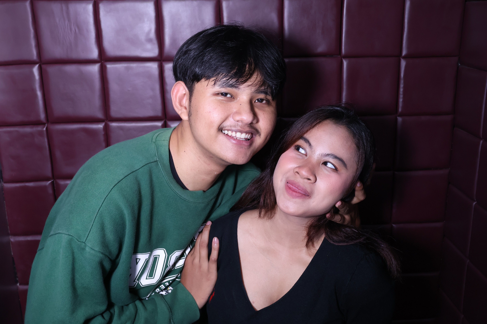

Tentang Owner Kami
Biodata Owner Kami
Aziz (Muhamad Azis Fadilah)
Aziz adalah salah satu owner Kafe Zafa yang punya passion besar di dunia kopi. Berawal dari hobi ngulik manual brew di rumah, Aziz memutuskan buat serius belajar meracik kopi dan akhirnya membangun Kafe Zafa bareng Zachra. Aziz percaya bahwa secangkir kopi yang baik bukan cuma soal rasa, tapi juga soal momen dan cerita di baliknya.

Sosial media Aziz:
Instagram@joey.1jordison
Zachra (Ar Zachra Firyall)
Zachra adalah owner Kafe Zafa yang bertanggung jawab di balik konsep dan suasana cafe. Dengan selera estetika yang kuat, Zachra memastikan setiap sudut Kafe Zafa nyaman buat nongkrong, kerja, maupun sekadar healing. Bareng Aziz, Zachra ingin Kafe Zafa jadi tempat yang bukan cuma enak buat ngopi, tapi juga tempat berkumpul yang hangat buat semua orang.
Sosial media Zachra:
Instagram@zchrafir
Cerita Kafe Zafa
Nama Zafa sendiri diambil dari gabungan nama keduanya, Zachra dan Fadilah (nama belakang Aziz), sebagai simbol kerja sama dan perjalanan mereka membangun cafe ini dari nol. Kafe Zafa hadir dengan harapan bisa jadi ruang ketiga yang nyaman, di luar rumah dan kantor, buat siapa aja yang butuh tempat singgah dengan secangkir kopi yang berkualitas.
Album Tentang Owner Kami
Galeri Foto Pribadi Owner Kami



Playlist Kesukaan Mereka
(Catatan: MAaf ya je Lagu nya baru dimasukkan satu dulu karena lagu yang lain belum di download :)